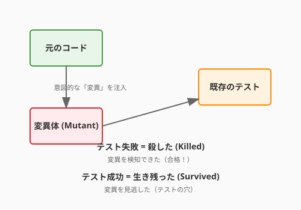

4.2節でテスト設計の技法を、4.3節でTDDのリズムを学びました。しかし、人間の想像力には限界があります。「自分が書いたコードの弱点」は、書いた本人にとって最も見えにくいものです。
ここでAIの出番です。AIに「このコードを壊すテストを書いて」と依頼すると、あなたが想定しなかったエッジケースや境界条件を突いてきます。まるで優秀な刺客を雇い、自分の城の守りを試すように——本気で攻めてくる相手がいるからこそ、守りはより堅固になります。
本節では、AIをテストの攻撃側に回し、コードの堅牢性を高める技法を学びます。

最もシンプルな使い方は、実装コードをAIに渡してテストを生成させることです。
以下のPythonコードに対して、unittestを使った包括的なテストスイートを生成してください。
正常系、異常系、境界値のテストケースを含めてください。
[calculate_quest_xp のコードを貼り付け]AIは4.2節で学んだ技法——同値分割、境界値分析——を自動的に適用し、テストケースを生成します。
AIが特に力を発揮するのは、人間が気づきにくい観点からのテストケース発見です。
以下のコードに対して、開発者が気づきにくいエッジケースを5つ挙げ、
それぞれのテストコードを書いてください。
特に以下の観点に注目してください：
- 空のコレクション、Noneの入力
- 整数のオーバーフロー
- 並行実行時の競合
- 文字列のエンコーディング
[コードを貼り付け]AIが見つけてくる「刺客」の例:
| 刺客（テストケース） | 狙いどころ |
|---|---|
経験値が int の最大値を超える |
整数オーバーフロー |
| クエストのタイトルが空文字 | 入力検証の漏れ |
| 報酬XPが負の値 | 仕様の曖昧な領域 |
| 同時に2人の英雄が同じクエストを完了 | 並行処理の競合 |
従来のテストは「入力Aに対して出力Bであること」を個別に検証します。プロパティベーステストは発想が異なり、「任意の入力に対して常に成り立つ性質」を定義し、大量のランダム入力で検証します。
「経験値報酬は常に0以上である」という性質をテストしてみましょう。
from hypothesis import given, strategies as st
@given(
base_xp=st.integers(min_value=0, max_value=10000),
hero_level=st.integers(min_value=1, max_value=100),
quest_level=st.integers(min_value=1, max_value=100),
)
def test_xp_reward_is_always_non_negative(base_xp, hero_level, quest_level):
quest = Quest("Random", "HARD", base_xp=base_xp,
recommended_level=quest_level)
hero = Hero("Test", level=hero_level)
result = calculate_quest_xp(quest, hero)
assert result >= 0 # どんな入力でも経験値は0以上Hypothesisライブラリは、この性質を何百ものランダムな入力の組み合わせで検証します。もし反例が見つかれば、失敗する最小の入力を自動的に絞り込んで報告してくれます。
| プロパティ | 検証内容 |
|---|---|
| 冪等性 | complete() を2回呼んでも状態は1回目と同じ |
| 可逆性 | エンコードしたものをデコードすると元に戻る |
| 不変条件 | ソート後もリストの長さと要素の集合は変わらない |
| 単調性 | レベルが高いほど、必要経験値は多くなる |
| 整合性 | 報酬の合計は、個別報酬の和と一致する |
4.2節で「カバレッジ100%でも品質は保証されない」と学びました。では、テストスイート自体の強さをどう測るのでしょうか？
ミューテーションテストは、コードに小さな変異（ミュータント）を注入し、テストがその変異を検知できるかを確認する技法です。
# 元のコード
def calculate_xp_multiplier(quest, hero):
if hero.level < quest.recommended_level:
return 2.0
return 1.0
# ミュータント1: < を <= に変異
def calculate_xp_multiplier(quest, hero):
if hero.level <= quest.recommended_level: # 変異！
return 2.0
return 1.0
# ミュータント2: 2.0 を 1.0 に変異
def calculate_xp_multiplier(quest, hero):
if hero.level < quest.recommended_level:
return 1.0 # 変異！
return 1.0ミューテーションスコア = 殺したミュータント数 / 全ミュータント数
スコアが低ければ、カバレッジが高くても「テストが甘い」ことがわかります。
| 言語 | ツール | 特徴 |
|---|---|---|
| Python | mutmut | Python特化、使いやすい |
| JavaScript | Stryker | 豊富なミュータント演算子 |
| Java | PIT (pitest) | 高速、Maven/Gradle連携 |
# Pythonでのミューテーションテスト実行例
pip install mutmut
mutmut run --paths-to-mutate=src/
mutmut resultsコラム: 形式的仕様記述——さらに厳密な守りへ
プロパティベーステストは「多数の具体的な入力」で性質を検証しますが、形式的仕様記述はさらに一歩進み、仕様を数学的に記述して網羅的に検証します。
Alloy: 集合と関係でモデルを記述し、反例を自動探索する軽量形式手法。「この設計にデッドロックは存在するか？」を数学的に確認できます。
TLA+: 状態遷移を時相論理で記述。Amazon Web Servicesが分散システムの設計検証に実戦投入したことで注目を集めました。
これらは学習コストが高いものの、ミッションクリティカルなシステム（金融、医療、航空宇宙）では強力な武器になります。興味がある方はLamport『Specifying Systems』やJackson『Software Abstractions』を手に取ってみてください。
以下のコードに対して、プロパティベーステスト（Hypothesis）を書いてください。
テストすべき性質を3つ提案し、それぞれのテストコードを生成してください。
[コードを貼り付け]以下のテストスイートに対して、ミューテーションテストの観点から
「この変異を見逃すだろう」と推測されるケースを3つ挙げ、
それを検知するための追加テストを提案してください。
[テストコードを貼り付け]執筆メモ: